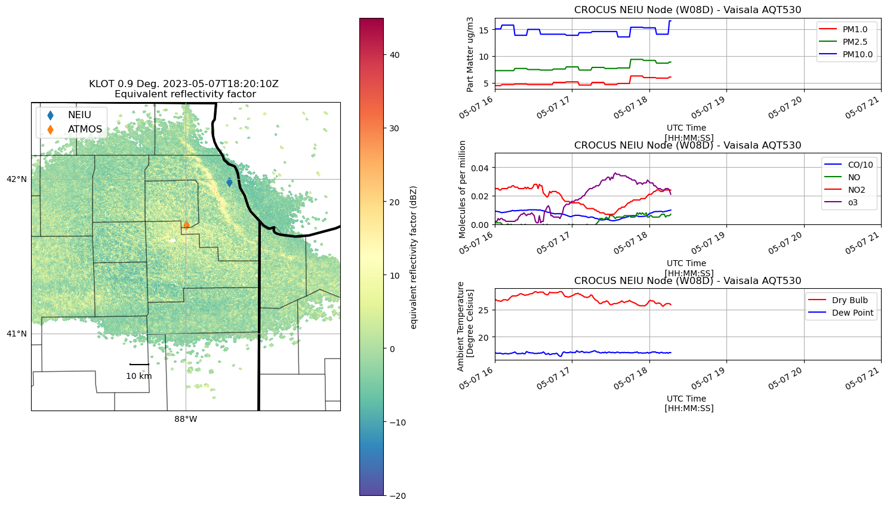
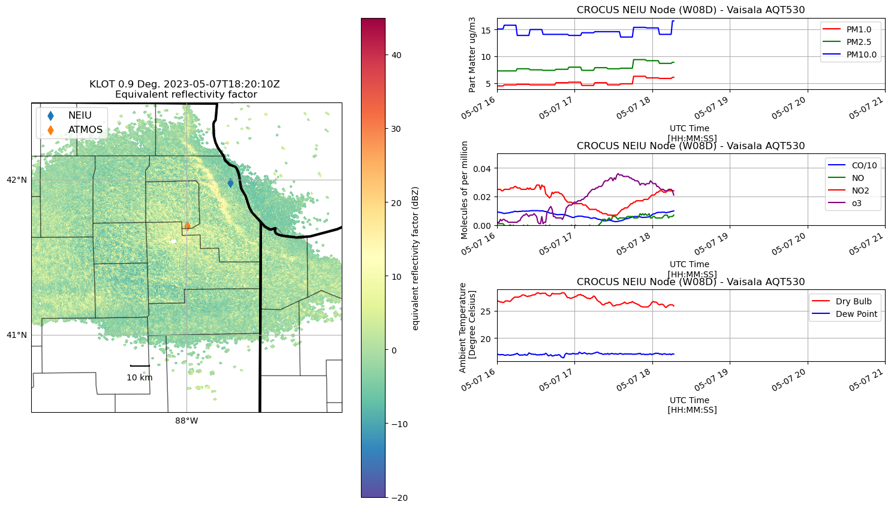

CROCUS Lake Breeze (May 7th, 2023)#
Lake Breeze are winds that blow off of Lake Michigan on shore due to difference in temperature between the lake and the shoreline.
While providing some relief from the heat during the Spring/Summer, these winds also can trap pollutants (in gas and particle form) at the surface creating unsafe air quality conditions.
With an unstable atmosphere, these lake breeze circulations can also initiate convection (i.e. vertically building clouds) and produce thunderstorms as was the case on 7 May 2023.
import glob
import os
import tempfile
import warnings
import numpy as np
import pandas as pd
import matplotlib.pyplot as plt
import matplotlib.gridspec as gridspec
import cartopy.crs as ccrs
import cartopy.feature as cfeature
from math import atan2 as atan2
from datetime import datetime
from metpy.plots import USCOUNTIES
from metpy.calc import dewpoint_from_relative_humidity
from metpy.units import units
import imageio
import pyart
import nexradaws
import sage_data_client
templocation = tempfile.mkdtemp()
warnings.filterwarnings("ignore")
## You are using the Python ARM Radar Toolkit (Py-ART), an open source
## library for working with weather radar data. Py-ART is partly
## supported by the U.S. Department of Energy as part of the Atmospheric
## Radiation Measurement (ARM) Climate Research Facility, an Office of
## Science user facility.
##
## If you use this software to prepare a publication, please cite:
##
## JJ Helmus and SM Collis, JORS 2016, doi: 10.5334/jors.119
Define Time and Location of the Event#
DATE = "2023-05-07"
# Times must be in UTC
TIME_START = "16:00:00"
TIME_STOP = "21:00:00"
RADAR_ID = "KLOT"
## convert input date and time to timestamps
START = pd.Timestamp(int(DATE.split('-')[0]),
int(DATE.split('-')[1]),
int(DATE.split('-')[2]),
int(TIME_START.split(':')[0]),
int(TIME_START.split(':')[1]),
int(TIME_START.split(':')[2])).tz_localize(tz="UTC")
STOP = pd.Timestamp(int(DATE.split('-')[0]),
int(DATE.split('-')[1]),
int(DATE.split('-')[2]),
int(TIME_STOP.split(':')[0]),
int(TIME_STOP.split(':')[1]),
int(TIME_STOP.split(':')[2])).tz_localize(tz="UTC")
# Define the domain to display for Chicago
MIN_LON = -89.0
MAX_LON = -87.0
MAX_LAT = 42.5
MIN_LAT = 40.5
BOUNDING_BOX = [MIN_LON, MAX_LON, MIN_LAT, MAX_LAT]
# Define the CROCUS Waggle Nodes to Display
WAGGLE_SITES = {'NEIU' : [41.980289109, -87.71703552],
'ATMOS' : [41.701605152, -87.995196552]
}
Define Helper Functions#
def gc_latlon_bear_dist(lat1, lon1, bear, dist):
"""
Input lat1/lon1 as decimal degrees, as well as bearing and distance from
the coordinate. Returns lat2/lon2 of final destination. Cannot be
vectorized due to atan2.
"""
re = 6371.1 # km
lat1r = np.deg2rad(lat1)
lon1r = np.deg2rad(lon1)
bearr = np.deg2rad(bear)
lat2r = np.arcsin(
(np.sin(lat1r) * np.cos(dist / re))
+ (np.cos(lat1r) * np.sin(dist / re) * np.cos(bearr))
)
lon2r = lon1r + atan2(
np.sin(bearr) * np.sin(dist / re) * np.cos(lat1r),
np.cos(dist / re) - np.sin(lat1r) * np.sin(lat2r),
)
return np.rad2deg(lat2r), np.rad2deg(lon2r)
def add_scale_line(
scale, ax, projection, color="k", linewidth=None, fontsize=None, fontweight=None
):
"""
Adds a line that shows the map scale in km. The line will automatically
scale based on zoom level of the map. Works with cartopy.
Parameters
----------
scale : scalar
Length of line to draw, in km.
ax : matplotlib.pyplot.Axes instance
Axes instance to draw line on. It is assumed that this was created
with a map projection.
projection : cartopy.crs projection
Cartopy projection being used in the plot.
Other Parameters
----------------
color : str
Color of line and text to draw. Default is black.
"""
frac_lat = 0.15 # distance fraction from bottom of plot
frac_lon = 0.35 # distance fraction from left of plot
e1 = ax.get_extent()
center_lon = e1[0] + frac_lon * (e1[1] - e1[0])
center_lat = e1[2] + frac_lat * (e1[3] - e1[2])
# Main line
lat1, lon1 = gc_latlon_bear_dist(
center_lat, center_lon, -90, scale / 2.0
) # left point
lat2, lon2 = gc_latlon_bear_dist(
center_lat, center_lon, 90, scale / 2.0
) # right point
if lon1 <= e1[0] or lon2 >= e1[1]:
warnings.warn(
"Scale line longer than extent of plot! "
+ "Try shortening for best effect."
)
ax.plot(
[lon1, lon2],
[lat1, lat2],
linestyle="-",
color=color,
transform=projection,
linewidth=linewidth,
)
# Draw a vertical hash on the left edge
lat1a, lon1a = gc_latlon_bear_dist(
lat1, lon1, 180, frac_lon * scale / 20.0
) # bottom left hash
lat1b, lon1b = gc_latlon_bear_dist(
lat1, lon1, 0, frac_lon * scale / 20.0
) # top left hash
ax.plot(
[lon1a, lon1b],
[lat1a, lat1b],
linestyle="-",
color=color,
transform=projection,
linewidth=linewidth,
)
# Draw a vertical hash on the right edge
lat2a, lon2a = gc_latlon_bear_dist(
lat2, lon2, 180, frac_lon * scale / 20.0
) # bottom right hash
lat2b, lon2b = gc_latlon_bear_dist(
lat2, lon2, 0, frac_lon * scale / 20.0
) # top right hash
ax.plot(
[lon2a, lon2b],
[lat2a, lat2b],
linestyle="-",
color=color,
transform=projection,
linewidth=linewidth,
)
# Draw scale label
ax.text(
center_lon,
center_lat - frac_lat * (e1[3] - e1[2]) / 4.0,
str(int(scale)) + " km",
horizontalalignment="center",
verticalalignment="center",
color=color,
fontweight=fontweight,
fontsize=fontsize,
)
Create Display Function to Display CROCUS Domain#
def chicago_aq_display(nradar, bounds, sites, aqvals, rad_time, rad_site='KLOT', **kwargs):
#---------------------------------------------------
# Define the GridSpec for Detailed Subplot Placement
#---------------------------------------------------
fig = plt.figure(figsize=(16, 10))
gs0 = gridspec.GridSpec(1, 2, figure=fig)
gs00 = gs0[1].subgridspec(4, 1, hspace=0.9, wspace=0.85)
# update the extent of the subplot
gs0.update(top=.90, bottom=0.1, left=0.1, right=.99)
#-------------------
# Plot the Radar PPI
#-------------------
ax1 = fig.add_subplot(gs0[0], projection=ccrs.PlateCarree())
ax1.add_feature(cfeature.STATES, linewidth=3)
ax1.add_feature(USCOUNTIES, alpha=0.4)
# Create the Radar Display Object
display = pyart.graph.RadarMapDisplay(nradar)
# Plot the reflectivty
display.plot_ppi_map('reflectivity',
ax=ax1,
sweep=3,
vmin=-20,
vmax=45,
lat_lines=None,
lon_lines=None,
min_lat=bounds[2],
max_lat=bounds[3],
min_lon=bounds[0],
max_lon=bounds[1],
ticklabs='',
embellish=False,
norm=None,
cmap="Spectral_r")
# Add the scale line
add_scale_line(10, ax1, ccrs.PlateCarree())
# Add the locations of the waggle nodes
for nsite in sites:
ax1.scatter(sites[nsite][1], sites[nsite][0], s=60, marker='d', label=nsite)
# Add a legend
plt.legend(loc='upper left',
fontsize=12)
#-------------------------------------------
# Add the air quality transmitter (AQT) data
#-------------------------------------------
## Note: I am using the radar scan time to time sync the AQT and radar data
aq_temp = aqvals.loc['2023-05-07 16:00:00':rad_time]
# Add the second plot for the gridspec
axs2 = fig.add_subplot(gs00[0])
aq_temp['pm1.0'].plot(xlabel='UTC Time \n [HH:MM:SS]',
ylabel='Part Matter ug/m3',
title='CROCUS NEIU Node (W08D) - Vaisala AQT530',
ax=axs2,
color='r',
label='PM1.0',
)
aq_temp['pm2.5'].plot(xlabel='UTC Time \n [HH:MM:SS]',
ylabel='Part Matter ug/m3',
title='CROCUS NEIU Node (W08D) - Vaisala AQT530',
ax=axs2,
color='g',
label='PM2.5',
)
aq_temp['pm10.0'].plot(xlabel='UTC Time \n [HH:MM:SS]',
ylabel='Part Matter ug/m3',
title='CROCUS NEIU Node (W08D) - Vaisala AQT530',
ax=axs2,
color='b',
label='PM10.0',
)
axs2.legend()
axs2.grid(True)
# Note: force the axis to display the entire time range
axs2.set_xlim([DATE + ' ' + TIME_START, DATE + ' ' + TIME_STOP])
#axs2.set_ylim([0.0, 0.3])
axs3 = fig.add_subplot(gs00[1])
(aq_temp['co']/10.0).plot(xlabel='UTC Time \n [HH:MM:SS]',
ylabel='Molecules of per million',
title='CROCUS NEIU Node (W08D) - Vaisala AQT530',
ax=axs3,
color='b',
label='CO/10',
)
aq_temp['no'].plot(xlabel='UTC Time \n [HH:MM:SS]',
ylabel='Molecules of per million',
title='CROCUS NEIU Node (W08D) - Vaisala AQT530',
ax=axs3,
color='g',
label='NO',
)
aq_temp['no2'].plot(xlabel='UTC Time \n [HH:MM:SS]',
ylabel='Molecules of per million',
title='CROCUS NEIU Node (W08D) - Vaisala AQT530',
ax=axs3,
color='r',
label='NO2',
)
aq_temp['o3'].plot(xlabel='UTC Time \n [HH:MM:SS]',
ylabel='Molecules of per million',
title='CROCUS NEIU Node (W08D) - Vaisala AQT530',
ax=axs3,
color='purple',
label='o3',
)
axs3.legend()
axs3.grid(True)
axs3.set_xlim([DATE + ' ' + TIME_START, DATE + ' ' + TIME_STOP])
axs3.set_ylim([0.0, 0.05])
axs4 = fig.add_subplot(gs00[2])
aq_temp.temp.plot(xlabel='UTC Time \n [HH:MM:SS]',
ylabel='Ambient Temperature \n [Degree Celsius]',
title='CROCUS NEIU Node (W08D) - Vaisala AQT530',
ax=axs4, color='r', label='Dry Bulb',
)
aq_temp.dewpoint.plot(xlabel='UTC Time \n [HH:MM:SS]',
ylabel='Ambient Temperature \n [Degree Celsius]',
title='CROCUS NEIU Node (W08D) - Vaisala AQT530',
color='b', label='Dew Point',
ax=axs4
)
axs4.legend()
axs4.grid(True)
axs4.set_xlim([DATE + ' ' + TIME_START, DATE + ' ' + TIME_STOP])
#axs4.set_ylim([0.0, 0.3])
# Search to see if temporary directory was supplied to save the file
if kwargs['templocation']:
plt.savefig(kwargs['templocation'] + '/' + 'lakebreeze' + '_' + rad_site + '_' + str(rad_time) +'.png')
else:
plt.savefig('lakebreeze' + '_' + rad_site + '_' + str(rad_time) +'.png')
Data Query#
National Weather Service Radar - Romoville, IL (KLOT)#
The National Weather Service Next Generation Radar (NEXRAD) in Romoville, IL provides radar coverage for the Chicago Region, allowing meteorologists to understand potential weather hazards (severe storms).
We show how to query data from this station and create a phase plane indictator (PPI) movie for the events of the user’s desire
This will allow us to investigate meteorological events within the region and compare against our CROCUS Nodes
# Configure the nexrad interface using our time and location
conn = nexradaws.NexradAwsInterface()
scans = conn.get_avail_scans_in_range(START, STOP, RADAR_ID)
print("There are {} scans available between {} and {}\n".format(len(scans), START, STOP))
# Download the files
results = conn.download(scans, templocation)
There are 48 scans available between 2023-05-07 16:00:00+00:00 and 2023-05-07 21:00:00+00:00
Downloaded KLOT20230507_163934_V06
Downloaded KLOT20230507_161726_V06
Downloaded KLOT20230507_161027_V06
Downloaded KLOT20230507_160329_V06
Downloaded KLOT20230507_162536_V06
Downloaded KLOT20230507_163235_V06
Downloaded KLOT20230507_165332_V06_MDM
Downloaded KLOT20230507_165332_V06
Downloaded KLOT20230507_170729_V06
Downloaded KLOT20230507_164633_V06
Downloaded KLOT20230507_170031_V06
Downloaded KLOT20230507_171428_V06
Downloaded KLOT20230507_172127_V06
Downloaded KLOT20230507_172827_V06
Downloaded KLOT20230507_173525_V06
Downloaded KLOT20230507_174224_V06
Downloaded KLOT20230507_175622_V06
Downloaded KLOT20230507_174923_V06
Downloaded KLOT20230507_175622_V06_MDM
Downloaded KLOT20230507_180321_V06
Downloaded KLOT20230507_181020_V06
Downloaded KLOT20230507_183117_V06
Downloaded KLOT20230507_182419_V06
Downloaded KLOT20230507_183817_V06
Downloaded KLOT20230507_185917_V06_MDM
Downloaded KLOT20230507_181719_V06
Downloaded KLOT20230507_184517_V06
Downloaded KLOT20230507_185217_V06
Downloaded KLOT20230507_185917_V06
Downloaded KLOT20230507_190617_V06
Downloaded KLOT20230507_191316_V06
Downloaded KLOT20230507_192714_V06
Downloaded KLOT20230507_192015_V06
Downloaded KLOT20230507_193413_V06
Downloaded KLOT20230507_194112_V06
Downloaded KLOT20230507_195509_V06_MDM
Downloaded KLOT20230507_194811_V06
Downloaded KLOT20230507_195509_V06
Downloaded KLOT20230507_200209_V06
Downloaded KLOT20230507_200908_V06
Downloaded KLOT20230507_201607_V06
Downloaded KLOT20230507_202307_V06
Downloaded KLOT20230507_203006_V06
Downloaded KLOT20230507_203704_V06
Downloaded KLOT20230507_204403_V06
Downloaded KLOT20230507_205103_V06
Downloaded KLOT20230507_205801_V06
Downloaded KLOT20230507_205801_V06_MDM
48 out of 48 files downloaded...0 errors
CROCUS Level 3 Node Data Query (W08D) - Northeastern Illinois University#
Please check our notebooks on the CROCUS-Level1-Node for more information on data query with the SAGE Data Client
Northeastern Illinois University (NEIU) served as the first CROCUS node deployed to the Chicago region.
## NEIU AQT
df_aq = sage_data_client.query(start = DATE + 'T' + TIME_START + 'Z',
end = DATE + 'T' + TIME_STOP + 'Z',
filter={
"plugin": "registry.sagecontinuum.org/jrobrien/waggle-aqt:0.23.5.*",
}
)
# extract the particle measurements from the DataFrame
pm25 = df_aq[df_aq['name']=='aqt.particle.pm2.5']
pm10 = df_aq[df_aq['name']=='aqt.particle.pm1']
pm100 = df_aq[df_aq['name']=='aqt.particle.pm10']
# extract the gas measurements from the DataFrame
no = df_aq[df_aq['name']=='aqt.gas.no']
o3 = df_aq[df_aq['name']=='aqt.gas.ozone']
no2 = df_aq[df_aq['name']=='aqt.gas.no2']
co = df_aq[df_aq['name']=='aqt.gas.co']
# extract the environment data from the DataFrame
aqtemp = df_aq[df_aq['name']=='aqt.env.temp']
aqhum = df_aq[df_aq['name']=='aqt.env.humidity']
# Convert values to numpy arrays
aqvals = pm25.set_index('timestamp')
aqvals['pm2.5'] = aqvals.value.to_numpy().astype(float)
aqvals['pm1.0'] = pm10.value.to_numpy().astype(float)
aqvals['pm10.0'] = pm100.value.to_numpy().astype(float)
aqvals['no'] = no.value.to_numpy().astype(float)
aqvals['o3'] = o3.value.to_numpy().astype(float)
aqvals['no2'] = no2.value.to_numpy().astype(float)
aqvals['co'] = co.value.to_numpy().astype(float)
aqvals['temp'] = aqtemp.value.to_numpy().astype(float)
aqvals['hum'] = aqhum.value.to_numpy().astype(float)
# Use MetPY to calculate dewpoint from temperature and relative humidity
dp = dewpoint_from_relative_humidity( aqvals.temp.to_numpy() * units.degC,
aqvals.hum.to_numpy() * units.percent)
aqvals['dewpoint'] = dp
Create Display#
Loop over each radar file and plot corresponding AQT data for that volume
We use the Python ARM Radar Toolkit (Py-ART) to open and display the data
for i, scan in enumerate(results.iter_success(), start=1):
## skip the files ending in "MDM"
if scan.filename[-3:] != "MDM":
if i > 1:
# define what file you are working on
print("working on " + scan.filename)
# define the radar time
rad_time = scan.filename[4:8] + '-' + scan.filename[8:10] + '-' + scan.filename[10:12] + \
' ' + scan.filename[13:15] + ':' + scan.filename[15:17] + ':' + scan.filename[17:19]
# Open the file with PyART
radar = scan.open_pyart()
# Call the CROCUS AQ Display Function
chicago_aq_display(radar,
BOUNDING_BOX,
WAGGLE_SITES,
aqvals,
rad_time,
templocation=templocation)
# close the radar file
del radar
working on KLOT20230507_161027_V06
Downloading file 'us_counties_20m.cpg' from 'https://github.com/Unidata/MetPy/raw/v1.6.3/staticdata/us_counties_20m.cpg' to '/home/runner/.cache/metpy/v1.6.3'.
Downloading file 'us_counties_20m.dbf' from 'https://github.com/Unidata/MetPy/raw/v1.6.3/staticdata/us_counties_20m.dbf' to '/home/runner/.cache/metpy/v1.6.3'.
Downloading file 'us_counties_20m.prj' from 'https://github.com/Unidata/MetPy/raw/v1.6.3/staticdata/us_counties_20m.prj' to '/home/runner/.cache/metpy/v1.6.3'.
Downloading file 'us_counties_20m.shx' from 'https://github.com/Unidata/MetPy/raw/v1.6.3/staticdata/us_counties_20m.shx' to '/home/runner/.cache/metpy/v1.6.3'.
Downloading file 'us_counties_20m.shp' from 'https://github.com/Unidata/MetPy/raw/v1.6.3/staticdata/us_counties_20m.shp' to '/home/runner/.cache/metpy/v1.6.3'.
working on KLOT20230507_161726_V06
working on KLOT20230507_162536_V06
working on KLOT20230507_163235_V06
working on KLOT20230507_163934_V06
working on KLOT20230507_164633_V06
working on KLOT20230507_165332_V06
working on KLOT20230507_170031_V06
working on KLOT20230507_170729_V06
working on KLOT20230507_171428_V06
working on KLOT20230507_172127_V06
working on KLOT20230507_172827_V06
working on KLOT20230507_173525_V06
working on KLOT20230507_174224_V06
working on KLOT20230507_174923_V06
working on KLOT20230507_175622_V06
working on KLOT20230507_180321_V06
working on KLOT20230507_181020_V06
working on KLOT20230507_181719_V06
working on KLOT20230507_182419_V06
working on KLOT20230507_183117_V06
working on KLOT20230507_183817_V06
working on KLOT20230507_184517_V06
working on KLOT20230507_185217_V06
working on KLOT20230507_185917_V06
working on KLOT20230507_190617_V06
working on KLOT20230507_191316_V06
working on KLOT20230507_192015_V06
working on KLOT20230507_192714_V06
working on KLOT20230507_193413_V06
working on KLOT20230507_194112_V06
working on KLOT20230507_194811_V06
working on KLOT20230507_195509_V06
working on KLOT20230507_200209_V06
working on KLOT20230507_200908_V06
working on KLOT20230507_201607_V06
working on KLOT20230507_202307_V06
working on KLOT20230507_203006_V06
working on KLOT20230507_203704_V06
working on KLOT20230507_204403_V06
working on KLOT20230507_205103_V06
working on KLOT20230507_205801_V06

 


Error in callback <function flush_figures at 0x7fba245fd900> (for post_execute), with arguments args (),kwargs {}:
---------------------------------------------------------------------------
TypeError Traceback (most recent call last)
File ~/miniconda3/envs/instrument-cookbooks-dev/lib/python3.10/site-packages/numpy/_core/numerictypes.py:326, in issubclass_(arg1, arg2)
325 try:
--> 326 return issubclass(arg1, arg2)
327 except TypeError:
TypeError: issubclass() arg 1 must be a class
During handling of the above exception, another exception occurred:
KeyboardInterrupt Traceback (most recent call last)
File ~/miniconda3/envs/instrument-cookbooks-dev/lib/python3.10/site-packages/matplotlib_inline/backend_inline.py:126, in flush_figures()
123 if InlineBackend.instance().close_figures:
124 # ignore the tracking, just draw and close all figures
125 try:
--> 126 return show(True)
127 except Exception as e:
128 # safely show traceback if in IPython, else raise
129 ip = get_ipython()
File ~/miniconda3/envs/instrument-cookbooks-dev/lib/python3.10/site-packages/matplotlib_inline/backend_inline.py:90, in show(close, block)
88 try:
89 for figure_manager in Gcf.get_all_fig_managers():
---> 90 display(
91 figure_manager.canvas.figure,
92 metadata=_fetch_figure_metadata(figure_manager.canvas.figure)
93 )
94 finally:
95 show._to_draw = []
File ~/miniconda3/envs/instrument-cookbooks-dev/lib/python3.10/site-packages/IPython/core/display_functions.py:298, in display(include, exclude, metadata, transient, display_id, raw, clear, *objs, **kwargs)
296 publish_display_data(data=obj, metadata=metadata, **kwargs)
297 else:
--> 298 format_dict, md_dict = format(obj, include=include, exclude=exclude)
299 if not format_dict:
300 # nothing to display (e.g. _ipython_display_ took over)
301 continue
File ~/miniconda3/envs/instrument-cookbooks-dev/lib/python3.10/site-packages/IPython/core/formatters.py:238, in DisplayFormatter.format(self, obj, include, exclude)
236 md = None
237 try:
--> 238 data = formatter(obj)
239 except:
240 # FIXME: log the exception
241 raise
File ~/miniconda3/envs/instrument-cookbooks-dev/lib/python3.10/site-packages/decorator.py:235, in decorate.<locals>.fun(*args, **kw)
233 if not kwsyntax:
234 args, kw = fix(args, kw, sig)
--> 235 return caller(func, *(extras + args), **kw)
File ~/miniconda3/envs/instrument-cookbooks-dev/lib/python3.10/site-packages/IPython/core/formatters.py:282, in catch_format_error(method, self, *args, **kwargs)
280 """show traceback on failed format call"""
281 try:
--> 282 r = method(self, *args, **kwargs)
283 except NotImplementedError:
284 # don't warn on NotImplementedErrors
285 return self._check_return(None, args[0])
File ~/miniconda3/envs/instrument-cookbooks-dev/lib/python3.10/site-packages/IPython/core/formatters.py:402, in BaseFormatter.__call__(self, obj)
400 pass
401 else:
--> 402 return printer(obj)
403 # Finally look for special method names
404 method = get_real_method(obj, self.print_method)
File ~/miniconda3/envs/instrument-cookbooks-dev/lib/python3.10/site-packages/IPython/core/pylabtools.py:170, in print_figure(fig, fmt, bbox_inches, base64, **kwargs)
167 from matplotlib.backend_bases import FigureCanvasBase
168 FigureCanvasBase(fig)
--> 170 fig.canvas.print_figure(bytes_io, **kw)
171 data = bytes_io.getvalue()
172 if fmt == 'svg':
File ~/miniconda3/envs/instrument-cookbooks-dev/lib/python3.10/site-packages/matplotlib/backend_bases.py:2184, in FigureCanvasBase.print_figure(self, filename, dpi, facecolor, edgecolor, orientation, format, bbox_inches, pad_inches, bbox_extra_artists, backend, **kwargs)
2180 try:
2181 # _get_renderer may change the figure dpi (as vector formats
2182 # force the figure dpi to 72), so we need to set it again here.
2183 with cbook._setattr_cm(self.figure, dpi=dpi):
-> 2184 result = print_method(
2185 filename,
2186 facecolor=facecolor,
2187 edgecolor=edgecolor,
2188 orientation=orientation,
2189 bbox_inches_restore=_bbox_inches_restore,
2190 **kwargs)
2191 finally:
2192 if bbox_inches and restore_bbox:
File ~/miniconda3/envs/instrument-cookbooks-dev/lib/python3.10/site-packages/matplotlib/backend_bases.py:2040, in FigureCanvasBase._switch_canvas_and_return_print_method.<locals>.<lambda>(*args, **kwargs)
2036 optional_kws = { # Passed by print_figure for other renderers.
2037 "dpi", "facecolor", "edgecolor", "orientation",
2038 "bbox_inches_restore"}
2039 skip = optional_kws - {*inspect.signature(meth).parameters}
-> 2040 print_method = functools.wraps(meth)(lambda *args, **kwargs: meth(
2041 *args, **{k: v for k, v in kwargs.items() if k not in skip}))
2042 else: # Let third-parties do as they see fit.
2043 print_method = meth
File ~/miniconda3/envs/instrument-cookbooks-dev/lib/python3.10/site-packages/matplotlib/backends/backend_agg.py:481, in FigureCanvasAgg.print_png(self, filename_or_obj, metadata, pil_kwargs)
434 def print_png(self, filename_or_obj, *, metadata=None, pil_kwargs=None):
435 """
436 Write the figure to a PNG file.
437
(...)
479 *metadata*, including the default 'Software' key.
480 """
--> 481 self._print_pil(filename_or_obj, "png", pil_kwargs, metadata)
File ~/miniconda3/envs/instrument-cookbooks-dev/lib/python3.10/site-packages/matplotlib/backends/backend_agg.py:429, in FigureCanvasAgg._print_pil(self, filename_or_obj, fmt, pil_kwargs, metadata)
424 def _print_pil(self, filename_or_obj, fmt, pil_kwargs, metadata=None):
425 """
426 Draw the canvas, then save it using `.image.imsave` (to which
427 *pil_kwargs* and *metadata* are forwarded).
428 """
--> 429 FigureCanvasAgg.draw(self)
430 mpl.image.imsave(
431 filename_or_obj, self.buffer_rgba(), format=fmt, origin="upper",
432 dpi=self.figure.dpi, metadata=metadata, pil_kwargs=pil_kwargs)
File ~/miniconda3/envs/instrument-cookbooks-dev/lib/python3.10/site-packages/matplotlib/backends/backend_agg.py:382, in FigureCanvasAgg.draw(self)
379 # Acquire a lock on the shared font cache.
380 with (self.toolbar._wait_cursor_for_draw_cm() if self.toolbar
381 else nullcontext()):
--> 382 self.figure.draw(self.renderer)
383 # A GUI class may be need to update a window using this draw, so
384 # don't forget to call the superclass.
385 super().draw()
File ~/miniconda3/envs/instrument-cookbooks-dev/lib/python3.10/site-packages/matplotlib/artist.py:94, in _finalize_rasterization.<locals>.draw_wrapper(artist, renderer, *args, **kwargs)
92 @wraps(draw)
93 def draw_wrapper(artist, renderer, *args, **kwargs):
---> 94 result = draw(artist, renderer, *args, **kwargs)
95 if renderer._rasterizing:
96 renderer.stop_rasterizing()
File ~/miniconda3/envs/instrument-cookbooks-dev/lib/python3.10/site-packages/matplotlib/artist.py:71, in allow_rasterization.<locals>.draw_wrapper(artist, renderer)
68 if artist.get_agg_filter() is not None:
69 renderer.start_filter()
---> 71 return draw(artist, renderer)
72 finally:
73 if artist.get_agg_filter() is not None:
File ~/miniconda3/envs/instrument-cookbooks-dev/lib/python3.10/site-packages/matplotlib/figure.py:3257, in Figure.draw(self, renderer)
3254 # ValueError can occur when resizing a window.
3256 self.patch.draw(renderer)
-> 3257 mimage._draw_list_compositing_images(
3258 renderer, self, artists, self.suppressComposite)
3260 renderer.close_group('figure')
3261 finally:
File ~/miniconda3/envs/instrument-cookbooks-dev/lib/python3.10/site-packages/matplotlib/image.py:134, in _draw_list_compositing_images(renderer, parent, artists, suppress_composite)
132 if not_composite or not has_images:
133 for a in artists:
--> 134 a.draw(renderer)
135 else:
136 # Composite any adjacent images together
137 image_group = []
File ~/miniconda3/envs/instrument-cookbooks-dev/lib/python3.10/site-packages/matplotlib/artist.py:71, in allow_rasterization.<locals>.draw_wrapper(artist, renderer)
68 if artist.get_agg_filter() is not None:
69 renderer.start_filter()
---> 71 return draw(artist, renderer)
72 finally:
73 if artist.get_agg_filter() is not None:
File ~/miniconda3/envs/instrument-cookbooks-dev/lib/python3.10/site-packages/cartopy/mpl/geoaxes.py:524, in GeoAxes.draw(self, renderer, **kwargs)
519 self.imshow(img, extent=extent, origin=origin,
520 transform=factory.crs, *factory_args[1:],
521 **factory_kwargs)
522 self._done_img_factory = True
--> 524 return super().draw(renderer=renderer, **kwargs)
File ~/miniconda3/envs/instrument-cookbooks-dev/lib/python3.10/site-packages/matplotlib/artist.py:71, in allow_rasterization.<locals>.draw_wrapper(artist, renderer)
68 if artist.get_agg_filter() is not None:
69 renderer.start_filter()
---> 71 return draw(artist, renderer)
72 finally:
73 if artist.get_agg_filter() is not None:
File ~/miniconda3/envs/instrument-cookbooks-dev/lib/python3.10/site-packages/matplotlib/axes/_base.py:3210, in _AxesBase.draw(self, renderer)
3207 if artists_rasterized:
3208 _draw_rasterized(self.get_figure(root=True), artists_rasterized, renderer)
-> 3210 mimage._draw_list_compositing_images(
3211 renderer, self, artists, self.get_figure(root=True).suppressComposite)
3213 renderer.close_group('axes')
3214 self.stale = False
File ~/miniconda3/envs/instrument-cookbooks-dev/lib/python3.10/site-packages/matplotlib/image.py:134, in _draw_list_compositing_images(renderer, parent, artists, suppress_composite)
132 if not_composite or not has_images:
133 for a in artists:
--> 134 a.draw(renderer)
135 else:
136 # Composite any adjacent images together
137 image_group = []
File ~/miniconda3/envs/instrument-cookbooks-dev/lib/python3.10/site-packages/matplotlib/artist.py:71, in allow_rasterization.<locals>.draw_wrapper(artist, renderer)
68 if artist.get_agg_filter() is not None:
69 renderer.start_filter()
---> 71 return draw(artist, renderer)
72 finally:
73 if artist.get_agg_filter() is not None:
File ~/miniconda3/envs/instrument-cookbooks-dev/lib/python3.10/site-packages/cartopy/mpl/feature_artist.py:185, in FeatureArtist.draw(self, renderer)
180 geoms = self._feature.geometries()
181 else:
182 # For efficiency on local maps with high resolution features (e.g
183 # from Natural Earth), only create paths for geometries that are
184 # in view.
--> 185 geoms = self._feature.intersecting_geometries(extent)
187 stylised_paths = {}
188 # Make an empty placeholder style dictionary for when styler is not
189 # used. Freeze it so that we can use it as a dict key. We will need
190 # to unfreeze all style dicts with dict(frozen) before passing to mpl.
File ~/miniconda3/envs/instrument-cookbooks-dev/lib/python3.10/site-packages/metpy/plots/cartopy_utils.py:38, in MetPyMapFeature.intersecting_geometries(self, extent)
36 """Return geometries that intersect the extent."""
37 self.scaler.scale_from_extent(extent)
---> 38 return super().intersecting_geometries(extent)
File ~/miniconda3/envs/instrument-cookbooks-dev/lib/python3.10/site-packages/cartopy/feature/__init__.py:112, in Feature.intersecting_geometries(self, extent)
109 if extent is not None and not np.isnan(extent[0]):
110 extent_geom = sgeom.box(extent[0], extent[2],
111 extent[1], extent[3])
--> 112 return (geom for geom in self.geometries() if
113 geom is not None and extent_geom.intersects(geom))
114 else:
115 return self.geometries()
File ~/miniconda3/envs/instrument-cookbooks-dev/lib/python3.10/site-packages/metpy/plots/cartopy_utils.py:33, in MetPyMapFeature.geometries(self)
31 get_test_data(fname + extension, as_file_obj=False)
32 path = get_test_data(fname + '.shp', as_file_obj=False)
---> 33 return iter(tuple(shapereader.Reader(path).geometries()))
File ~/miniconda3/envs/instrument-cookbooks-dev/lib/python3.10/site-packages/cartopy/io/shapereader.py:223, in FionaReader.__init__(self, filename, bbox, **kwargs)
220 else:
221 feature = feature
--> 223 d = {'geometry': sgeom.shape(feature['geometry'])
224 if feature['geometry'] else None}
225 d.update(feature['properties'])
226 self._data.append(d)
File ~/miniconda3/envs/instrument-cookbooks-dev/lib/python3.10/site-packages/shapely/geometry/geo.py:107, in shape(context)
105 return LinearRing(ob["coordinates"])
106 elif geom_type == "polygon":
--> 107 return Polygon(ob["coordinates"][0], ob["coordinates"][1:])
108 elif geom_type == "multipoint":
109 return MultiPoint(ob["coordinates"])
File ~/miniconda3/envs/instrument-cookbooks-dev/lib/python3.10/site-packages/shapely/geometry/polygon.py:246, in Polygon.__new__(self, shell, holes)
243 else:
244 holes = [LinearRing(ring) for ring in holes]
--> 246 geom = shapely.polygons(shell, holes=holes)
247 if not isinstance(geom, Polygon):
248 raise ValueError("Invalid values passed to Polygon constructor")
File ~/miniconda3/envs/instrument-cookbooks-dev/lib/python3.10/site-packages/shapely/decorators.py:102, in deprecate_positional.<locals>.decorator.<locals>.wrapper(*args, **kwargs)
99 @wraps(func)
100 def wrapper(*args, **kwargs):
101 # call the function first, to make sure the signature matches
--> 102 ret_value = func(*args, **kwargs)
104 # check signature to see which positional args were used
105 sig = inspect.signature(func)
File ~/miniconda3/envs/instrument-cookbooks-dev/lib/python3.10/site-packages/shapely/decorators.py:87, in multithreading_enabled.<locals>.wrapped(*args, **kwargs)
85 for arr in array_args:
86 arr.flags.writeable = False
---> 87 return func(*args, **kwargs)
88 finally:
89 for arr, old_flag in zip(array_args, old_flags):
File ~/miniconda3/envs/instrument-cookbooks-dev/lib/python3.10/site-packages/shapely/creation.py:414, in polygons(geometries, holes, indices, out, **kwargs)
335 """Create an array of polygons.
336
337 Parameters
(...)
411
412 """
413 geometries = np.asarray(geometries)
--> 414 if not isinstance(geometries, Geometry) and np.issubdtype(
415 geometries.dtype, np.number
416 ):
417 geometries = linearrings(geometries)
419 if indices is not None:
File ~/miniconda3/envs/instrument-cookbooks-dev/lib/python3.10/site-packages/numpy/_core/numerictypes.py:529, in issubdtype(arg1, arg2)
471 @set_module('numpy')
472 def issubdtype(arg1, arg2):
473 r"""
474 Returns True if first argument is a typecode lower/equal in type hierarchy.
475
(...)
527
528 """
--> 529 if not issubclass_(arg1, generic):
530 arg1 = dtype(arg1).type
531 if not issubclass_(arg2, generic):
File ~/miniconda3/envs/instrument-cookbooks-dev/lib/python3.10/site-packages/numpy/_core/numerictypes.py:326, in issubclass_(arg1, arg2)
291 """
292 Determine if a class is a subclass of a second class.
293
(...)
323
324 """
325 try:
--> 326 return issubclass(arg1, arg2)
327 except TypeError:
328 return False
KeyboardInterrupt:
Assemble Static Plots into a Movie#
# Define files created and define movie path
map_images = sorted(glob.glob(templocation + f"/lakebreeze*"))
gif_title = f"lakebreeze_{RADAR_ID}-map-animation.gif"
# Check to see if the file exists - if it does, delete it
if os.path.exists(gif_title):
os.remove(gif_title)
# Loop through and create the gif
with imageio.get_writer(gif_title, mode='I', duration=0.2) as writer:
for filename in map_images:
image = imageio.imread(filename)
writer.append_data(image)